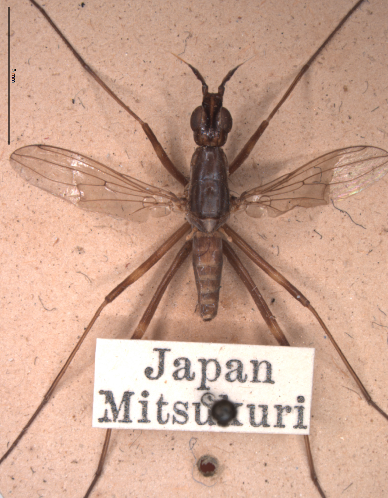
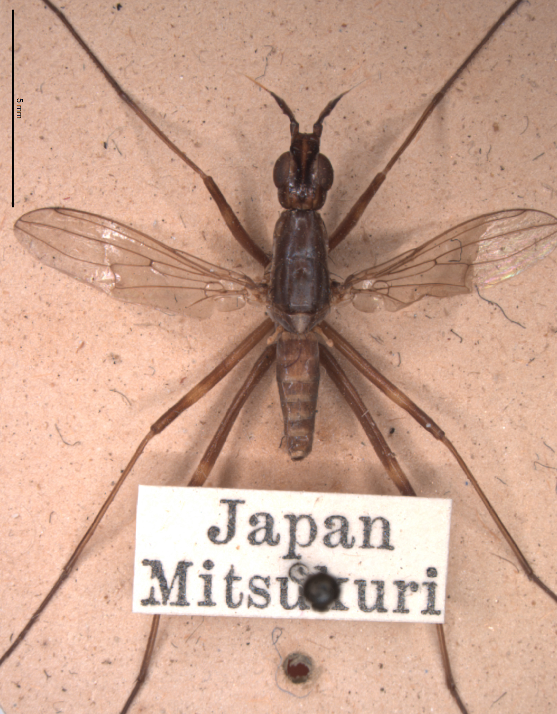
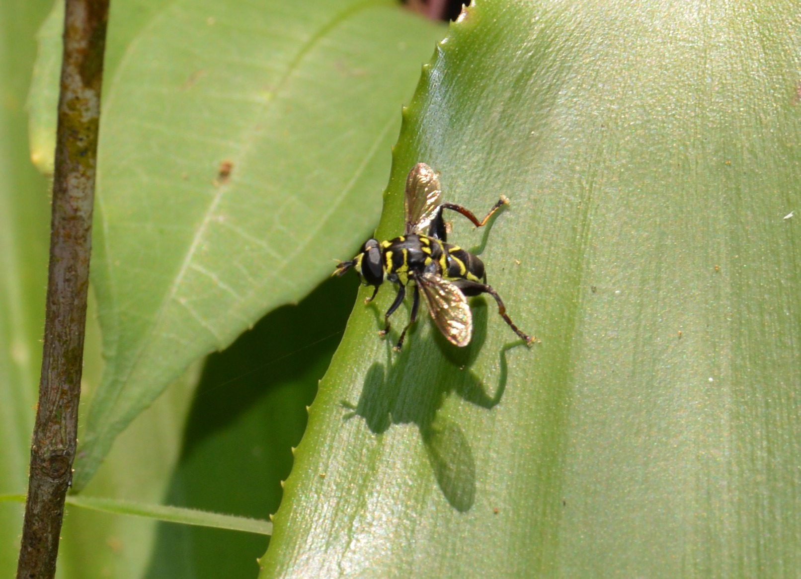
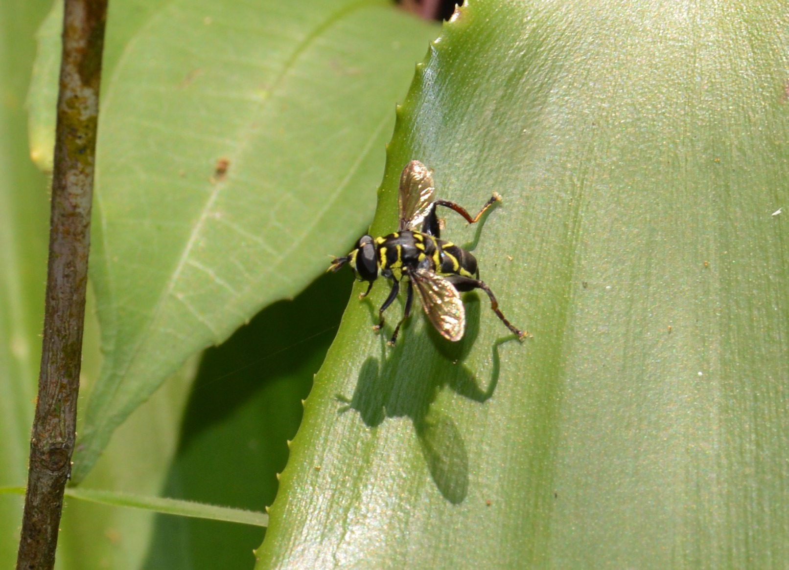
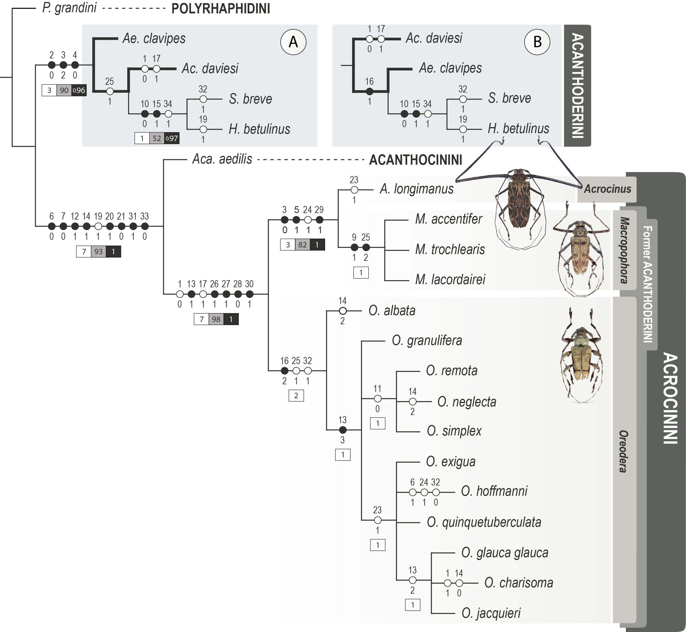

Current Projects
Systematics and evolution of cactus flies (Ditptera: Neriidae)
Neriidae is a small family of acalyptrate flies commonly found in all continents. With this project, we aim to propose a comprehensive phylogenetic hypothesis for the family. We are also reviewing the taxonomy of all valid species of Neriidae, updating the keys for identification and the known geographical distribution of its genera
 

Taxonomy of species of Syrphidae (Insecta: Diptera) of Brazil from bromelids, with emphasis on Copestylum Macquart
Copestylum Macquart is one of the most diverse genera in the family Syrphidae (Insecta: Diptera). This genus of flies has been studied as potential pollinators of plants that produce seeds grown in greenhouses. During their larval stages, the species of Copestylum are sapropagic and generally develop in decomposing plant tissues (Rotheray et al., 2009). Currently, 93 species of Copestylum are known to occur in Brazil, including records of 15 species in the State of Paraná (Marinoni et al., 2004) and a number of morphospecies that are probably new species to be described. Thus, the main objective of this project is to inventory the species of Copestylum that occur in the State of Paraná through the revision of the material deposited in the Entomological Collection 'Pe. Jesus Santiago Moure' (DZUP) and field collections in selected areas in the State of Paraná

 

Molecular systematics and classification of the longhorned beetle subfamily Lamiinae (Coleoptera: Cerambycidae)
Lamiinae is the most diverse subfamily of Cerambycidae, having more than 21,000 species distributed in all biogeographical regions. Most suprageneric divisions of Lamiinae were proposed during the 19th century and, until today, very few tribes had their taxonomic limits assessed by phylogenetic approaches. This project aims to use both morphological and molecular characters and phylogenetic approaches to reconstruct a tribal-level phylogeny of Lamiinae and investigate the processes involved in the diversification of the tribes. With this project, we expect to have a strong background to delimit the tribes and address a tribal classification for Lamiinae in which the taxa can be recognized as a reflection of their evolutionary history
